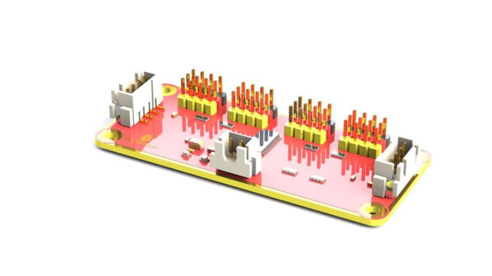
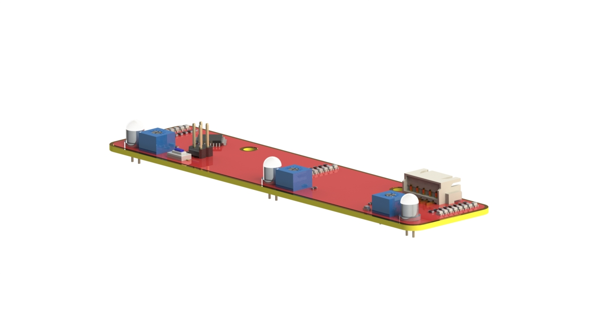
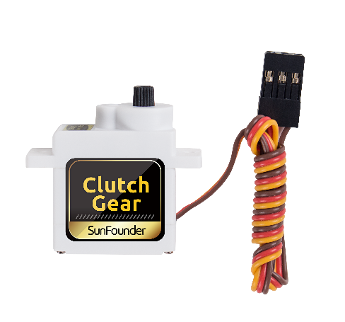

モジュール¶
ロボットHATS¶
**ロボットHATS**は40ピンRaspberry Piに特別に設計されたHATであり、Raspberry Pi世代3モデルB、世代3モデルB +、世代4モデルBで動作し、GPIOポートからRaspberry Piに電力を供給する。HATSのルールに基づいた理想的なダイオードの設計により、USBケーブルとDCポートの両方を介してRaspberry Piに電源を供給できるため、バッテリーの電力不足によってTFカードが損傷することを防ぐことができる。PCF8591はI2C通信とアドレス0x48を備えたADCチップとして使用される。
1. デジタルポート：3線式デジタルセンサーポート、信号電圧：3.3V、VCC電圧：3.3V。
2. アナログポート：3線4チャネル8ビットADCセンサーポート、基準電圧：3.3V、VCC電圧：3.3V。
3. I2Cポート：3.3V I2Cバスポート
4. 5V電源出力：PWMドライバーへの5V電源出力。
5. UARTポート：4線UARTポートと5V VCCはUSBへのSunFounder FTDIシリアルと完全に連携する。
6. モーター制御ポート：モーター用5V、モーターMAとMBの方向制御、フローティングピンNC、モータードライバーモジュールとの連携。
7. スイッチ：電源スイッチ
8. 電源インジケータ：電圧を指示する-2つのインジケータが点灯：> 7.9V。1つのインジケーター：7.9V〜7.4V。インジケータ点灯なし：<7.4V。バッテリーを保護するために、インジケーターが点灯していない場合は、充電する際にこれを取り出してください。電源インジケータは単純なコンパレータ回路によって測定された電圧に依存する。負荷によっては検出電圧が通常より低下する場合があるので参考値としてご利用ください。
9. 電源ポート：5.5/2.1mm標準DCポート、入力電圧：8.4〜7.4V（制限された動作電圧：12V〜6V）。
PCA9865¶
PCA9685 16チャネル12ビットI2CバスPWMドライバー。独立したPWM出力電力をサポートし、並列接続用の4線式I2Cポート、PWM出力用の区別された3色ポートをより簡単に利用できる。
1. PWM output ports: 3-color ports, independent power PWM output port, connect to the servo directly.
2 & 3. I2Cポート：4線式I2Cポートは並列で使用できる。3.3V/5.5Vに対応
PWM電源入力：最大12V。
LED：チップとPWM電源入力用電源インジケータ。
モータードライバーモジュール¶
モータードライバーモジュールは低発熱の小型パッケージモータードライブである。
1.電源とモーター制御ポート：チップとモーターに電力を供給し、モーターの方向を制御するためのピンが含まれている。
2.モーターのPWM入力：2つのモーターの速度を調整するためのPWM信号入力。
3.モーター出力ポート：2つのモーターの出力ポート
ラインフォロワーモジュール¶
TCRT5000赤外線光電スイッチは高送信電力赤外線フォトダイオードと高感度フォトトランジスタを採用している。これは、オブジェクトのIR反射光の原理を適用することによって機能する。光は放射され、次に反射され、同期回路によって感知される。そして、光の強弱によって物体の有無を判断する。白黒の線を簡単に識別できる。
言い換えると、フォトトランジスタが黒と白のラインを通過するときの異なる伝導レベルにより、異なる出力電圧が生成される可能性がある。したがって、必要なのは、Atmega328のADコンバーターによってデータを収集し、I2C通信を介してマスターコントロールボードにデータを送信することだけである。
このモジュールは5つのTRT5000センサーを使用する赤外線追跡センサーである。TRT5000の青色LEDは発光管であり、通電すると人間の目には見えない赤外光を発する。センサーの黒い部分は受信に使用される。内部の抵抗器の抵抗値は、受信した赤外線によって変化する。
ライトフォロワーモジュール¶
フォトトランジスターはフォトダイオードとも呼ばれ、光を電流に変換するデバイスである。フォトンがPNジャンクションで吸収されると、電流が生成される。逆電圧が印加されると、デバイスの逆電流は光の輝度とともに変化する。光が強いほど、逆電流が大きくなる。ほとんどのフォトトランジスタはこのように動作する。
HATSのADCチップは8ビットのアナログ信号を受信して整数に変換し、信号をRaspberry Piに転送する。Raspberry Piはデータを分析して、最も明るい領域（光源）の方向を決定し、4つの車輪のステアリングと動きを制御して光源に近づける。
この実験では、光に焦点を当てた懐中電灯が必用する。少なくとも、モジュールの3つのフォトトランジスタに同時に到達するために、トーチのスポットサイズは大きすぎてはならない。まあ、あなたは小さなスポットサイズを得るために車の近くに懐中電灯を照らすこともできる。
超音波障害物回避モジュール¶
原理
Trigに10usの短いパルスを供給してレンジングを開始し、モジュールは40 kHzで8サイクルの超音波バーストを送信し、Echoにエコーを上げる。エコーはパルス幅と距離に比例した距離オブジェクトである。トリガー信号を送信してからエコー信号を受信するまでの間に、Time Intervalを通じてRangeを計算できる。
式：
または：
または：
エコーへのトリガー信号を防ぐために、60ms以上の測定サイクルを使用してください。
SunFounder SF006Cサーボ¶
SunFounder SF0180サーボは180度の3線式デジタルサーボである。60HzのPWM信号を利用し、物理制限はない。最大180度までの内部ソフトウェアのみによって制御される。
電気仕様：
DCギアモーター¶
これは減速機付きのDCモーターである。以下のパラメーターを参照してください：
著作権表示¶
このマニュアルのテキスト、画像とコードを含むがこれらに限定されないすべての内容は、SunFounder Companyが所有している。関連する規制と著作権法に基づき、著者と関連する権利所有者の法的権利を侵害することなく、個人的な研究、調査、享楽、またはその他の非営利目的でのみ使用してください。許可なく営利目的でこれを使用する個人または組織については、会社は法的措置を取る権利を留保する。